Electronics & Communication Engineering
University School of Automation and Robotics
New Delhi, India
Abstract. Integrate‑and‑fire (IAF) and leaky
integrate‑and‑fire (LIF) models are the popular models for spiking
neurons and spiking neuron networks (SNN). They lack the dynamic
properties of ordinary differential equation (ODE) models but are
simpler; more than half of all digital neuron implementations use IAF or
LIF. The resonate‑and‑fire (RAF) model proposed by Izhikevich keeps that
simplicity while adding real dynamic behavior, but it has lacked a
general hardware structure — most realizations have been analog. This
paper develops and simulates the RAF equations with digital pulses,
proposes block models of digital and all‑digital RAF neurons, and
verifies the design on an Intel 28 nm Cyclone V FPGA. The
resulting register‑transfer‑level (RTL) design uses just
23 D flip‑flops, with no floating‑point operations and
no multipliers.
Index Terms — integrate‑and‑fire, leaky integrate‑and‑fire,
resonate‑and‑fire, dynamic, all‑digital, FPGA
Section I
Introduction
Integrate‑and‑fire (IAF) and leaky integrate‑and‑fire (LIF) neuron
models have appeared in thousands of studies. Although they are more
than a century old, their simplicity has made them the default choice
for simulating and building neuromorphic hardware.
The most biophysically complete model is the conductance‑based
Hodgkin‑Huxley model (1952). Between 1960 and 2003, researchers
proposed reduced alternatives — FitzHugh‑Nagumo (1961/1962),
Morris‑Lecar (1981), Hindmarsh‑Rose (1984), and Izhikevich (2003) —
each trying to keep some of Hodgkin‑Huxley's realism while cutting its
computational cost.
The authors surveyed over 100 papers from 2000–2022 that turned
spiking‑neuron models into integrated circuits or FPGA emulations,
grouped by model: IAF (27 papers), LIF (37), FitzHugh‑Nagumo (7),
Hindmarsh‑Rose (8), Morris‑Lecar (2), Spike Response Model (2),
Izhikevich (10), and others using non‑CMOS materials such as RRAMs,
memristors, biristors, and photonic components (6).
🔍 In Layman's Terms
Before building anything new, the authors did a literature census:
of 100 hardware neuron papers from the last two decades, more than
half used the two oldest, simplest models (IAF/LIF). More biologically realistic neuron models were usually implemented as analog circuits rather than efficient digital hardware, because translating their differential equations into digital logic is much harder.
TABLE 1
Hardware classification for 100 publications from 2000 to 2022.
Model
Analog CMOS
Emulation
Others
IAF
[1]–[9] (32%)
[10]–[23] (54%)
[24]–[27] (14%)
LIF
[28]–[41] (38%)
[42]–[60] (51%)
[61]–[64] (11%)
FitzHugh–Nagumo
[65]–[69] (71%)
[70] (29%)
None (0%)
Hindmarsh–Rose
[72]–[76] (62%)
[77]–[79] (38%)
None (0%)
Morris–Lecar
[80] (50%)
None (0%)
[81] (50%)
SRM
None (0%)
[82]–[83] (100%)
None (0%)
Izhikevich
[84]–[85] (20%)
[86]–[93] (80%)
None (0%)
Others
[97]–[98] (33%)
[94], [95], [99] (50%)
[96] (17%)
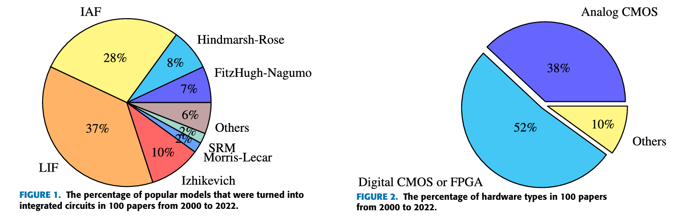
Figure 1 & 2. Chart depicting the percentage of popular
models that were turned into integrated circuits as well the
percentage of hardware types
This survey showed that digital implementation is the most common way
to deploy spiking‑neuron hardware, even though many researchers argue
analog circuits are more power‑ and area‑efficient for neuron cells.
The catch is that analog neuron hardware is vulnerable to device
mismatch, leakage power, technology scaling limits, noise, and
Process‑Voltage‑Temperature (PVT) variation — and it typically takes
longer to design than digital circuits.
Because IAF and LIF are so simple, they miss dynamic properties real
neurons have — like subthreshold oscillation and selective
communication — so spiking networks built from them can't exploit
those biological advantages. In 2001, Izhikevich proposed the
resonate‑and‑fire (RAF) model, adding three dynamic
properties to the IAF/LIF baseline while remaining, in his words, "an
analogue" of the IAF model — powerful like Hodgkin‑Huxley, simple like
IAF/LIF.
Yet from 2001 to 2022, only three integrated‑circuit realizations of
RAF existed, and two of those were analog. Recent work has instead
focused on FPGA emulations of the related Izhikevich model, typically
using clock‑driven algorithms: shifters, the Euler method, or the
CORDIC algorithm to avoid multiplication, and fixed‑point numbers to
avoid floating point. Dedicated finite‑state machines were sometimes
added to control model operation — all of which costs hardware
resources and, because of the clock‑driven approach, dynamic power.
From the paper's motivation, the original RAF model was more hardware friendly than the Izhikevich
model and other conductance‑based models — simple like IAF/LIF, but
still carrying the important dynamic features of an analog neuron.
Contributions
A mathematical model of a digital RAF neuron whose pulse train forms
the damped subthreshold oscillation, expressed in a complex domain
over time.
Block models of both a digital RAF neuron and an
all‑digital RAF neuron.
A sample‑and‑hold method that realizes the digital RAF model in
hardware without multipliers, adders, or real numbers.
A detailed digital circuit design of the all‑digital RAF neuron,
featuring a damped subthreshold oscillator with zero dynamic power
at rest.
🔍 In plain English
Imagine pushing a child on a swing. One push starts an oscillation. If the next push arrives at the right moment, it reinforces the motion; if it arrives too late, almost nothing happens. The proposed hardware recreates this timing-dependent behavior using digital logic instead of continuously solving differential equations.
What's Next
Having established why existing neuron models are difficult to implement efficiently in digital hardware, the next section introduces the original Resonate-and-Fire model and examines why previous hardware implementations remained limited.
Section II
The RAF Model & Related Work
The Resonate-and-Fire (RAF) neuron, introduced by Izhikevich in 2001, extends the classical integrate-and-fire neuron with timing-sensitive resonance. Instead of responding only to the amount of input, it also responds to when that input arrives.
🔍 In plain English
Imagine pushing someone on a swing. One push starts the swing moving. If the second push arrives at the right moment, it adds to the motion. If it comes too early or too late, very little happens. The RAF neuron behaves similarly: the first input starts a damped oscillation, and whether the second input triggers a spike depends on its timing.
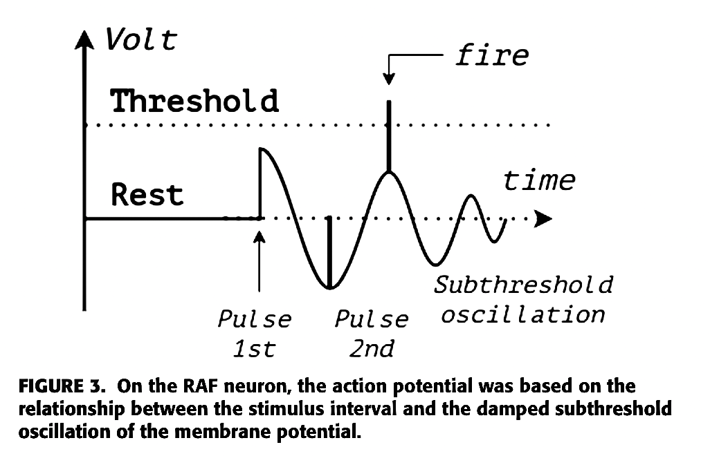
The first impulse excites the neuron.
The membrane begins a damped oscillation.
The oscillation gradually loses energy.
If another impulse arrives during a high phase, both signals add together.
The summed voltage crosses threshold and produces a spike.
The oscillatory activity of an RAF neuron over time is:
where where z ∈ C denotes a complex-valued neuron state, with
current part x and voltage part y. On the first
impulse, membrane voltage begins a damped subthreshold oscillation
with frequency ω and damping constant b, caused by
membrane impedance.
This is the central challenge addressed by the paper: although Equation (1) accurately describes the neuron's dynamics, it provides no obvious path to a digital circuit implementation.
An earlier analog realization
[97]
used a Lotka–Volterra oscillator built from subthreshold MOSFETs to play the
role of the damped oscillator. Although innovative, the circuit depended on
thermal voltage and supply voltage, making it highly sensitive to
process, voltage, and temperature (PVT) variation as well as
transistor mismatch.
A second design
[98]
integrated incoming signals during the oscillation's high state and reset
during the low state. While similar in spirit, it ignored the actual timing
between successive impulses, preventing it from reproducing the RAF model's
selective communication property.
Design [97]
Lotka–Volterra Analog Oscillator
Implemented the damped oscillator using a subthreshold MOSFET realization
of the Lotka–Volterra equations.
Main limitation
Highly sensitive to thermal voltage, supply voltage, transistor mismatch,
and overall PVT variation.
Design [98]
High/Low-State Integration
Integrated signals during the oscillation's high state and reset during
the low state to approximate resonate-and-fire behavior.
Main limitation
Could not measure the true interval between impulses, so it lacked the
selective communication property of the original RAF neuron.
🔍 In plain English
Both circuits captured part of the RAF idea, but each lost something
important. One relied on fragile analog device physics, while the other
simplified the timing behavior so much that it could no longer recognize
precisely timed input spikes.
The Izhikevich Neuron Model & Its Digital Hardware Realization
In 2003, Eugene Izhikevich proposed a universal neuron model that could
reproduce a wide variety of biological firing behaviors using a remarkably
compact system of only two ordinary differential equations.
Here, v represents the membrane potential while u models the
membrane recovery process. Setting
a = 0.1,
b = 0.26,
c = −60, and
d = −1
produces the characteristic resonator behavior.
The model quickly became one of the most influential neuron models because it
achieved an exceptional balance between simplicity and
diverse neuronal firing behaviors. Unlike the original RAF equations, it
eliminates complex-valued variables and describes neuron dynamics using only
two state variables. Despite this compact formulation, it can still reproduce
many different neuronal firing patterns — including resonator behavior — making
it practical for both neuroscience simulations and digital hardware
implementations.
🔍 In plain English
This model is famous because it does a lot with very little. Two variables,
no complex math, but still enough structure to mimic many real neuron
behaviors. That is why hardware people care about it.
To implement this model on digital hardware, a Japanese research group
proposed the Rotate-and-Fire Digital Spiking Neuron (RDN)
[99]. Instead of representing the neuron state with continuous variables, the design encodes it using rotating bit patterns stored in two circular shift registers.
RDN control & datapath flow
Each circular shifter always contains a single logic '1' that
continuously rotates through its cells, allowing the two registers to encode
the membrane potential and recovery variable over time. A dedicated
five-state finite-state machine (FSM) controls the shifting
direction, while reset circuitry and configurable interconnections recreate
the reset behavior of the Izhikevich equations.
The architecture is highly flexible and can reproduce
14 different neuron-like firing responses, making it a
general-purpose implementation of the Izhikevich model rather
than a circuit dedicated only to resonate-and-fire neurons.
2
state variables (v, u)
5
FSM control states
14
firing patterns reproduced
However, this flexibility comes at a hardware cost. The implementation
requires numerous combinational and sequential components — including adders,
subtractors, counters, comparators, circular shifters, and a dedicated FSM — to
coordinate every update. Since the shift registers rotate continuously, bits
change state on every internal clock cycle, causing four flip-flops to switch
every cycle and increasing dynamic power consumption. This behavior contrasts
with biological neurons and simpler IAF, LIF, and RAF models, whose resting
states consume almost no dynamic switching power.
Even when the neuron is completely idle, the shift registers continue rotating. The hardware therefore consumes dynamic switching power even when no spikes are being generated.
🔍 In plain English
RDN is flexible, but it burns more hardware to do it. The registers keep
moving all the time, so the circuit is always switching instead of staying
quiet at rest.
Trade-off: RDN trades power efficiency for flexibility —
continuous bit rotation keeps the circuit "always active," unlike biologically
event-driven spiking behavior.
Section III
A Digital RAF Model in the Complex Domain
A. Model
The membrane potential of the original RAF model is a
damped subthreshold oscillation. In continuous-time
mathematical models, this type of oscillation is typically represented
by a damped sine wave. While this description is well suited for
analysis, it is not convenient for implementation using purely digital
hardware.
Instead of generating an analog sine wave, the authors model the
subthreshold oscillation as a damped pulse train. A pulse
train naturally matches digital logic because it consists of discrete
high and low states rather than continuously varying voltages. To obtain
an analytical expression for this digital waveform, the pulse train is
expanded using a Fourier series, giving the following
expression for the membrane potential:
Here, the exponential term models the gradual decay of the oscillation,
while the Fourier series reconstructs the damped pulse train from a sum
of harmonic cosine components. This provides a mathematical description
that remains suitable for analysis while closely matching the behavior
of a digital implementation.
Here A is the membrane‑potential amplitude (in biology,
roughly −65 mV to +30 mV; in digital hardware, a logic level
such as +5 V, +3.3 V, or +1.8 V), d is the
duty cycle, ω the subthreshold frequency, b the damping
constant (<1), m the number of pulses, and
tn the moment of the last impulse.
If ω = 0 and t ≫ tn, then y(t) = 0 — a resting potential of zero,
unlike a real neuron's negative resting voltage. To give the model a
constant negative resting level with no extra parameters, the authors
add an offset of −A/2:
Based on [100] and [108], we assume that if there is any injected current while the membrane potential is oscillating, the state of the neuron is described by the following equation:
(8)$$\dot{z}=(b+i\omega)z+J_{\text{injected}}$$
Go deeper — solving for total membrane potential z(t)
Since the neuron's state is represented as a complex quantity containing
both a current component and a voltage component, the integral of the
injected current must also contain both parts. Otherwise, the voltage
component of the neuron's state would remain unaffected by the injected
current. The authors therefore assume that the injected current can be
written as:
Equation (11) suggests that the neuron's behavior can be interpreted as two parallel operations: a
damped subthreshold oscillation of membrane potential
(integration from Na+ channels) and an
integration of current impulses (from Na⁺ channels).
Their sum is the action potential. This structure gives the block
model in Figure 4 of the source paper: a damped
oscillator plays the role of the dendrite membrane, an integrator
plays the role of the neuron's body, and a summing block — the axon
hillock — combines them into the action potential.
Figure 4A block model of the Resonate and Fire Neuron Model.
Solving the integrator's potential by superposition (assuming
ω = 0, t ≫ tn) gives capacitor‑discharge behavior:
VA therefore mixes subthreshold oscillation with
spikes. In biology, dynamic polarization strips the subthreshold part
out along the axon, so the action potential leaving the neuron becomes
an all‑or‑none spike — effectively a digital pulse.
A resonator (unlike a pure integrator) doesn't naturally have
all‑or‑none spikes — that depends on eigenfrequency, with a zero
eigenfrequency reducing RAF to an integrator. Since subthreshold
oscillation isn't useful for digital communication, the authors force
all‑or‑none spikes in both cases by passing the total potential
through a logistic function:
Small k (e.g. 1 or 2) preserves subthreshold ripple in
VDA; very large k makes it a true digital pulse.
VTH is set above the sum of the oscillation's peak
and part of the integrator's contribution:
Fixed parameters:A, m, b, k — depend on hardware
characteristics (voltage level, how fast the neuron returns to rest).
Configurable parameters:d, ω — duty cycle and subthreshold
frequency, which act like a perceptron's weights, tuned to data and
application.
Figure 5
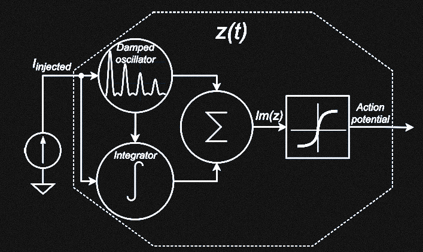
Figure 5. Proposed block model of the digital RAF neuron
model.
💡 One way to think about it (Analogy)
The following is an analogy to build intuition—it is
not part of the paper's mathematical formulation.
Imagine striking a bell. One parameter controls how long the ringing lasts,
while another controls the ringing frequency. If a second strike arrives
while the bell is still ringing strongly, the combined vibration exceeds a
threshold and produces an output. The equations in this section formalize
that intuition by representing the oscillation, defining the threshold, and
converting the result into a digital spike.
B. Simulation (R language)
Fixed parameters:
A = 1, m = 3, b = 0.02, k = 5000.
Configurable parameters: d = 0.3 (30%),
ω ≈ 125.7 rad/s (20 Hz). Simulation length
300 ms, resolution τ = dt = 0.1 ms,
threshold V_TH ≈ 1.37.
1) Evoking damped oscillation — single impulse at tn = 110
ms
A single impulse (0.2 amplitude, 0.1 ms duration) pushes the membrane
potential up but stays below the 1.37 threshold, then evokes the
damped oscillation.
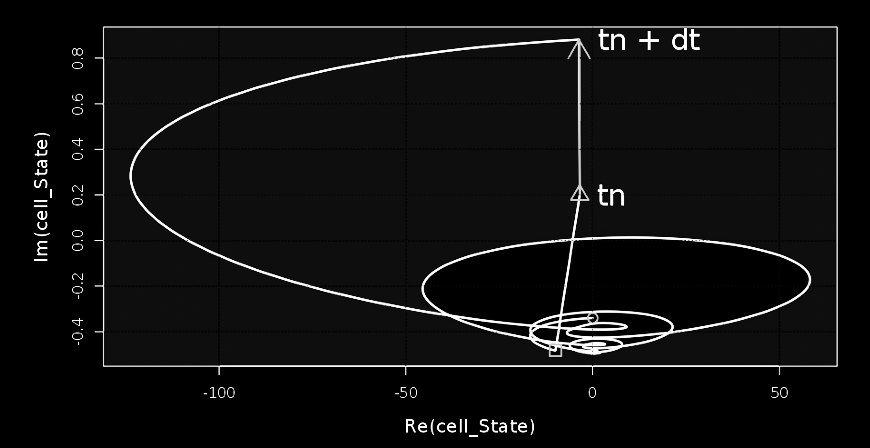
Figure 6. States of the DRAF neuron in a complex domain with
one injected current pulse at tn = 110ms and dt = 0.1ms.
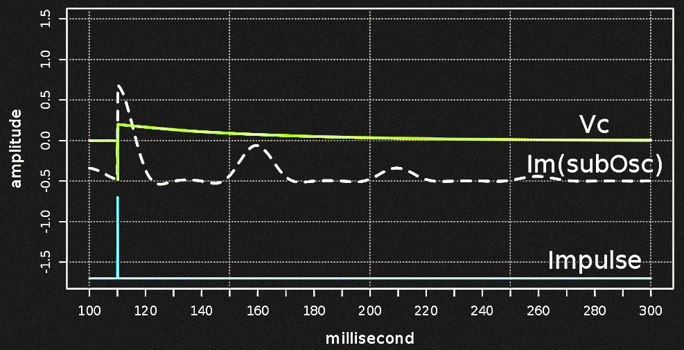
Figure 7. Potentials of the DRAF neuron's components over
time with one injected current pulse at tn = 110 ms and dt = 0.1 ms.
Resting level is −0.5. With b = 0.02 and an
eigenperiod of 50 ms, the damped wave shows two significant pulses at
110 ms and 160 ms, the second peak being half the height of the first.
The integrator's Vc curve samples the
membrane potential at injection and leaks toward zero. In Fig. 6, a
white region marks all trajectories that simply decay back to rest,
while a gray region marks trajectories whose next crossing could
trigger a new oscillation.
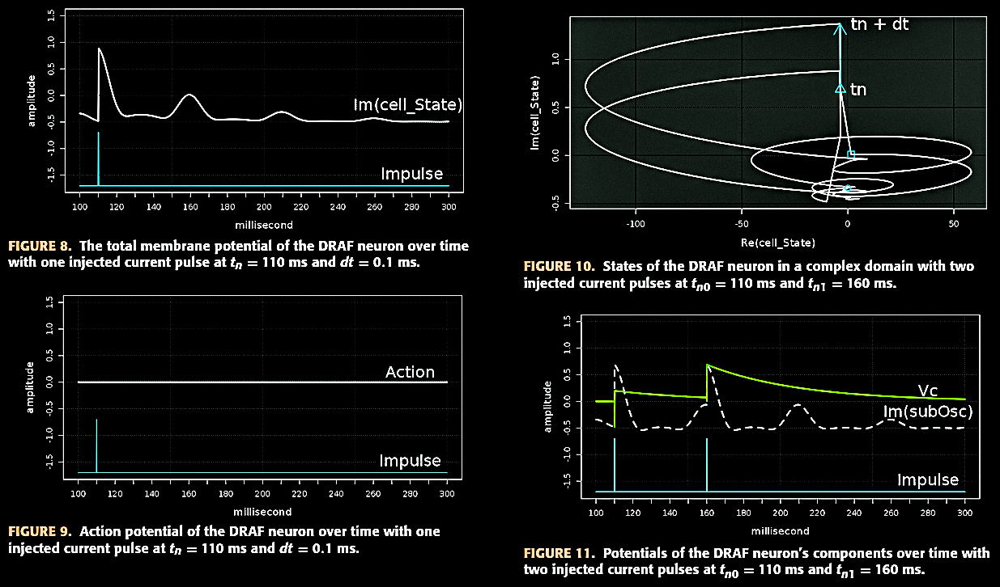
Figure 8, 9, 10, 11.
2) Resonating event — second impulse exactly one eigenperiod later
With the second impulse arriving 50 ms after the first (matching the
50 ms eigenperiod), the trajectory is pulled from a still‑elevated
state into the gray region again, this time crossing V_TH = 1.37 and
firing — the neuron resonates and fires.
3) Non‑resonating case — interval = half the eigenperiod
With a shorter, mismatched interval, the trajectory is close to
resting when the later impulses arrive, and never rises high enough to
fire — only subthreshold ripple appears. This confirms the model's
frequency preference, also called selective
communication.
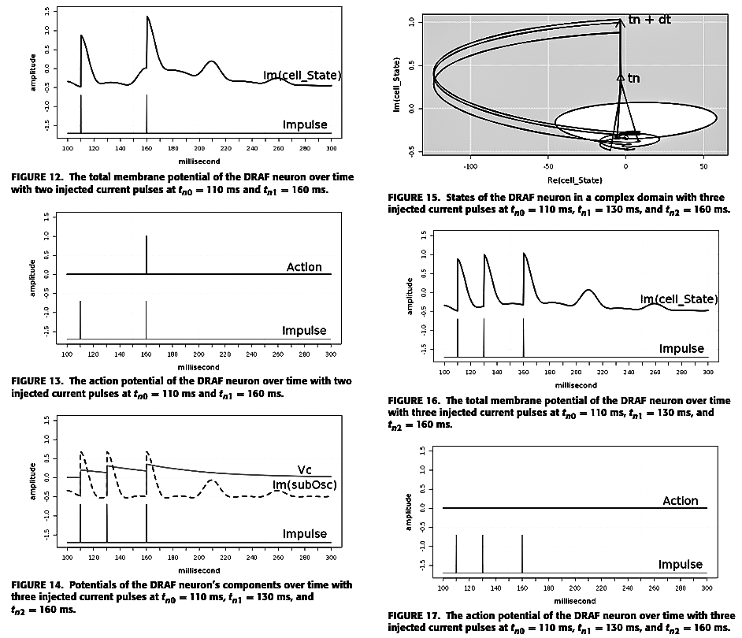
Figures 12–13. Membrane potential and resulting spike for two
resonant pulses (110, 160 ms). Figure 15. Complex-plane
trajectory, three pulses (110, 130, 160 ms).
Figures 16–17. Membrane potential and action potential for
the same three pulses — subthreshold ripple only, no spike, since
the 130→160 ms interval is half the eigenperiod.
4) Coincidence event — two impulses only 5 ms apart
With duty cycle d = 0.3 (a 15 ms high‑state
window) and only a 5 ms gap between two impulses, the integrator
hasn't leaked much energy and rises quickly to a high level. The
trajectory is already outside the "safe" white region when the second
impulse lands, so it easily crosses V_TH and fires — demonstrating
coincidence detection, the same property found in the
original RAF model.
Section IV
The All‑Digital Model
The simulations presented in Section III confirm that the proposed
Digital Resonate-and-Fire (DRAF) neuron successfully reproduces
the three defining dynamic properties of the original RAF model:
damped subthreshold oscillation,
selective communication, and
coincidence detection. Although the DRAF model already produces
all-or-none output spikes, the damped oscillator within the neuron still
generates an analog oscillatory waveform (as shown in
Figure 7). To achieve a fully digital implementation, the
authors introduce an additional logistic function (L1)
immediately after the oscillator. This stage converts the analog damped
oscillation into a train of discrete digital pulses while preserving the
neuron's resonant behavior, resulting in the proposed
all-digital RAF model.
🔍 In plain English
Up to this point, the damped oscillator still produces an analog-like
subthreshold waveform. To obtain a fully digital implementation, the authors
introduce an additional logistic function after the oscillator, converting
this waveform into a true digital pulse train. The resulting
pulse train preserves the timing and damping behavior of the original
oscillation while allowing the neuron to be implemented using standard
digital logic.
The resonance detector operates as a small sequence detector whose logic states are summarized in Table 2.
Table 2 — Action mechanism of resonance detection in the all-digital
RAF neuron circuit
Step
Sub Clock
Impulse
Q0
Q1
Q2
RS_action
Reset
1
X
0
0
0
0
1
1
↑
1
0
0
0
2
0
X
0
1
0
0
3
1
↑
1
1
0
0
4
0
X
0
1
1
1
5
1
0
0
1
0
0
The subthreshold clock idles high at reset. The first impulse (Step 1)
evokes the NCO; the second impulse (Step 3) samples its second pulse.
During the transition from Step 3 to Step 4, the falling edge of the subthreshold clock shifts the sampled pulse into both Q1 and Q2. Their simultaneous high state asserts RS_action, after which Q2 is immediately cleared so that the detector is ready for the next resonance event, so
RS_action pulses high and Q2 resets — an
all-or-none spike is added to the action potential.
Using the same parameters as Section III‑B1 (damping
b = 0.02, producing two effective pulses),
the authors chose the half‑peak of the second pulse of the damped wave
as L1's threshold and simulated the full timeline in R:
Figure 22Figure 22. Simulation results of the all-digital RAF neuron using R language. First injection at t = 110 ms evokes two digital pulses (50 ms eigenperiod, 15 ms duty cycle). A long doublet (310–400 ms, 90 ms interval) fails to spike. A doublet at 500/550 ms has the same interval exactly and resonates, firing at 550 ms. A doublet at 650/670 ms (20 ms interval) falls into the oscillation's low phase and produces no spike. A coincident pair at 800/805 ms (5 ms interval, within the 15 ms duty cycle) triggers the coincidence detector and fires again.
Notice that only the damped oscillator is converted into a digital pulse train. The integrator intentionally remains waveform-based at the model level because its role is memory storage, and digital integrators are already straightforward to implement in hardware. This is also one reason IAF and LIF models have been widely adopted in neuromorphic circuits.
🔍 In plain English
Only the "ringing" part of the neuron is converted into digital pulses. The
memory part is already naturally suited to digital circuits, so there is no
need to redesign it. This keeps the architecture simpler while preserving
the neuron's original behavior.
Figure 22 illustrates four representative stimulus cases.
t = 110 ms — first injection evokes two digital
pulses (50 ms eigenperiod, 15 ms duty cycle) on
Im(subOsc), then the oscillator falls
silent from 200–300 ms — analog damped wave has been converted into a digital pulse train.
310–400 ms — a doublet whose interval exceeds the eigenperiod: no spike on Action.
500–550 ms — a second doublet, spaced at the 50 ms
eigenperiod: Im(cell_State) crosses
Vth, producing an all-or-none spike at 550
ms.
650–670 ms — a 20 ms doublet, shorter than the
eigenperiod but the second impulse falls into the oscillation's low phase (15 ms duty
cycle): no spike between 650–800 ms.
800/805 ms — a 5 ms coincident doublet, well within
the 15 ms duty window: easily pulls membrane potential above threshold.
These results demonstrate that a true digital pulse train can faithfully reproduce the RAF model's dynamic behaviors while remaining compatible with digital hardware. Consequently, the proposed digital and all-digital RAF models provide practical alternatives to traditional IAF and LIF neurons for hardware implementation.
Section V
Hardware Implementation
A. Digital Circuit Design
In the proposed all-digital block model, the damped oscillator
and the first logistic function (L1) are merged into a single
hardware block implemented as either a
Digitally Controlled Oscillator (DCO) or, equivalently, a
Numerically Controlled Oscillator (NCO). By enabling or
disabling the oscillator, this block generates the damped digital pulse train
required to reproduce the neuron's resonant dynamics. Meanwhile, the
integrator remains responsible for preserving the neuron's
internal state by storing the membrane potential at the moment each input
impulse is received.
Visually, the relationship between membrane potential and injected
current (Fig. 3) mirrors an analog signal being captured by a sampling
clock in analog‑to‑digital conversion. So the authors implement the
integrator's job with a sample‑and‑hold circuit
(Figure 24 in the source paper): a D flip‑flop clocked by the current
impulses, with its data line fed by the oscillator (DCO/NCO). This
captures the oscillation's phase at the moment of injection into a
buffer that behaves like the integrator. Because only the two nearest
impulses matter for detecting resonance and coincidence,
2‑bit shifters serve as phase accumulators.
🔍 In plain English
Instead of continuously calculating the neuron's state every clock cycle, the circuit simply samples the oscillator whenever an input spike arrives. Each sample records whether the oscillation was in a high or low state at that instant, allowing later logic to detect resonance using only flip-flops and logic gates.
The authors observe that the relationship between the injected current and the
membrane potential closely resembles the operation of an
analog-to-digital converter (ADC). Instead of continuously
integrating the oscillatory waveform, the circuit only needs to capture the
membrane state at the precise moment an input impulse arrives. Consequently,
the oscillator output is sampled only at these discrete instants, preserving
the neuron's state while greatly simplifying the hardware implementation.
Figure 24
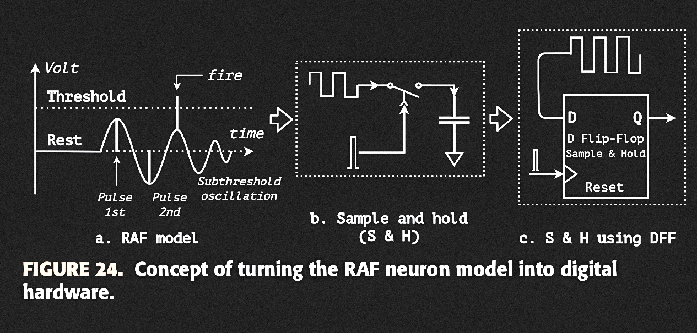
Figure 24 shows the sample-and-hold circuit that replaces the mathematical integrator. The injected impulse acts as the sampling clock, while the oscillator output becomes the sampled data. The stored value therefore represents the neuron's state at the exact moment of stimulation.
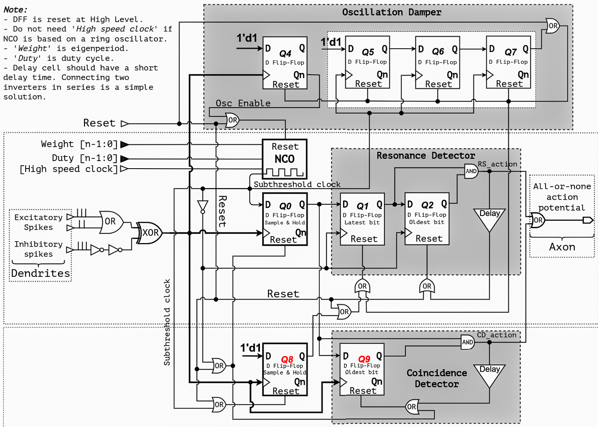
Figure 25. General schematic of the proposed all-digital RAF neuron cell.
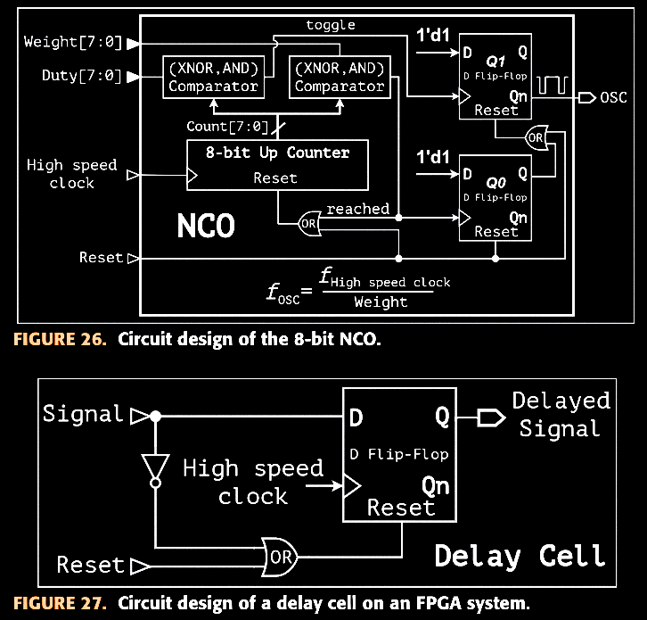
Figure 26. Circuit design of the 8-bit numerically controlled oscillator (NCO).
Figure 27. Delay circuit implementation used in the FPGA design.
Walking through Figure 25:
The n-bit NCO is
programmed by Duty[n-1:0] and
Weight[n-1:0] and driven by a high-speed
clock (removable if the NCO is a ring oscillator). An impulse sets
Osc Enable via DFF Q4,
enables the NCO. from reset to generate the subthreshold
oscillation.
A 3-bit shifter (Q5, Q6 counting
pulses, Q7 flipping on the third pulse) forms the
Oscillation Damper — it resets the NCO after three
pulses, holding that reset until a new impulse arrives. Because of
Q4, an impulse can't re-trigger an already-oscillating NCO; the NCO
only leaves reset once the gap since the last enabling impulse
exceeds three oscillation periods. This limits the oscillator to a finite number of pulses, reproducing the damped behavior predicted by the mathematical model.
Two sample-and-hold circuits, Q0 and
Q8, catch the oscillation's phase on every
injection — Q0 during the oscillation's high phase (excitatory
injection), Q8 during the low phase (sampling inverted, high-level
pulses). An injection landing here implies the last doublet's
interval is between the duty cycle and the eigenperiod, so a reset
clears the resonance detector's phase accumulator.
After the first oscillation pulse, sampled data shifts into
Q1 (latest bit) then Q2 (oldest
bit) on the oscillation's falling edges — the
Resonance Detector. If both go high, the last two
impulses were spaced about one eigenperiod apart; an AND gate raises
RS_action, which is delayed briefly and
fed back to clear Q2 (keeping Q1's latest bit alive for continuous
firing under sustained resonance).
During the oscillation's high phase, the oscillator is effectively
stopped and the neuron behaves like a plain IAF neuron — coincidence
can't use the shifting clock, so a second buffer,
Q9 after Q0, forms the
Coincidence Detector, clocked directly by the
injected pulse and accumulating '1's like a digital IAF neuron. An
AND gate again derives the action from Q0 and Q9, with the result
delayed and fed back to clear Q9.
The final action potential sums the resonance detector's and
coincidence detector's outputs. Excitatory spikes are OR'd into a
single spike train; inhibitory spikes pass through an XOR gate to
cancel excitatory ones (two inverters reduce a race condition
against the excitatory OR gate). Because XOR sums all impulses,
inhibitory spikes can also evoke the NCO's pulse train — reproducing
the RAF model's post-inhibitory spikes property.
The whole design uses only basic logic gates. No multipliers, adders, floating-point arithmetic, or real-number operators are required. The entire neuron is constructed from standard logic gates and D flip-flops. (NOT, AND, OR, XOR) and D flip-flops — a schematic that maps directly onto standard
CMOS VLSI processes.
B. Implementation on FPGA
The NCO can be built from digital self-oscillators such as ring
oscillators; on the FPGA (a clock-driven device) the authors instead
use an 8-bit binary up-counter driven by a high-speed
clock (Figure 26 in the source paper), reset to a high output level,
with all internal flip-flops steady and switching frequency zero at
rest — so, per the dynamic power relation
(19)$$P_{\text{dynamic}}=\alpha \times V
\times f^2$$
dynamic power is zero while resting. Once "Reset" is released, the
counter compares its value to Weight and
Duty using XNOR/AND comparators to set the
oscillator's period and duty cycle. A delay cell — trivial in CMOS as
two series inverters, awkward on an FPGA — is realized with a
dedicated circuit (Figure 27).
Synthesizing the neuron cell (Figure 28, RTL structure) on an Intel
Cyclone V 5CSEBA6U23I7 with Quartus Prime
Lite required 20 ALM units and 23 registers, These measurements were obtained after Quartus Prime Lite synthesis for an Intel Cyclone V FPGA. — the
source data behind Table 3. That budget suggests roughly
2000 neuron cells fit on this FPGA; using ALMs alone,
one neuron costs about 54 ALM units, or
0.13% of the device's total ALMs.
Table 4 — Resource utilization for one neuron cell on an FPGA,
compared across publications
Resource
[99]
[87]
[54]
[92]
[60]
This work
Year
2011
2013
2021
2022
2022
2022
Model
RDN
IZK
LIF
IZK
LIF
DRAF
Target FPGA
Xilinx SPARTAN-3
Xilinx Virtex-4
Xilinx Zynq UltraScale+
Xilinx Zynq-7000Q
Xilinx Virtex-7
Altera Cyclone V
ALMs
NA
NA
NA
NA
NA
20
LUTs
NA
1598
455
218
196
NA
Flip-flops
5
970
85
530
297
23
Multipliers
NA
1
NA
NA
NA
0
Counters
3 (13-bit & 2×4-bit)
NA
NA
NA
NA
1 (ALMs & DFFs based)
Comparator
10
NA
NA
NA
NA
1 (ALMs based)
Adders
5
NA
NA
NA
NA
0
Subtractors
1
NA
NA
NA
NA
0
DSP blocks
NA
NA
NA
6
NA
0
ROM
16×10-bit, 16×4-bit
NA
NA
NA
NA
0
Compared with previous implementations, the proposed neuron eliminates multipliers, adders, subtractors, DSP blocks, ROM, and large state machines. The reduction in hardware complexity follows directly from representing resonance with pulse timing instead of numerically solving differential equations.
Table 5 — Analog RAF neuron [97] vs. this work's all-digital RAF
neuron
Metric
[97]
This work
Year
2006
2022
CMOS process
AMI 0.35 μm
Intel 28 nm LP
Supply voltage
1.5 V
1.1 V
Eigenperiod
50 μs
50 μs
Impulse width
300 ns
200 ns
Response time, resonance event
NA
5 μs
Response time, coincidence event
NA
0 μs
Click a column header to sort either table.
Because the proposed neuron is entirely digital, it is inherently free from process-voltage-temperature sensitivity that affected earlier analog RAF implementations.
From Mathematical Model to Hardware
Section V replaces each mathematical block introduced earlier with a digital hardware implementation while preserving the same computational behavior.
Mathematical Block (Section III)
Hardware Realization (Section V)
Damped Oscillator
→
Digitally Controlled Oscillator (DCO)
Integrator
→
Sample-and-Hold Circuit
Resonance Detector
→
Q1–Q2 Shift Register
Coincidence Detector
→
Q0–Q9 Buffer Register
Logistic Function (L2)
→
Output Logic
Action Potential Generation
→
OR/XOR Output Stage
This mapping provides a direct correspondence between the mathematical DRAF neuron developed in Section III and the digital architecture implemented in Section V, illustrating how each computational component is translated into synthesizable FPGA hardware.
Section VI
Results
A. Simulation
The RTL was simulated in Verilog with a 5 MHz high-speed clock (f_iClk), NCO weight nW = 250, NCO duty
nd = 100, and injected-impulse duration
τ = 1/f_iClk = 200 ns. These settings give
an eigenfrequency f_oClkSub = 20 kHz,
eigenperiod T = 50 μs, and duty cycle
d = 20 μs (Figure 29 in the source paper).
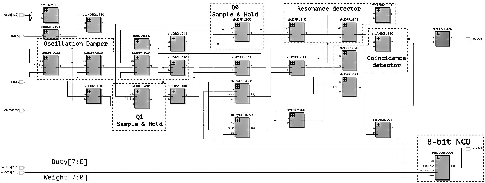
Figure 28. RTL structure of the all-digital RAF neuron on an FPGA.
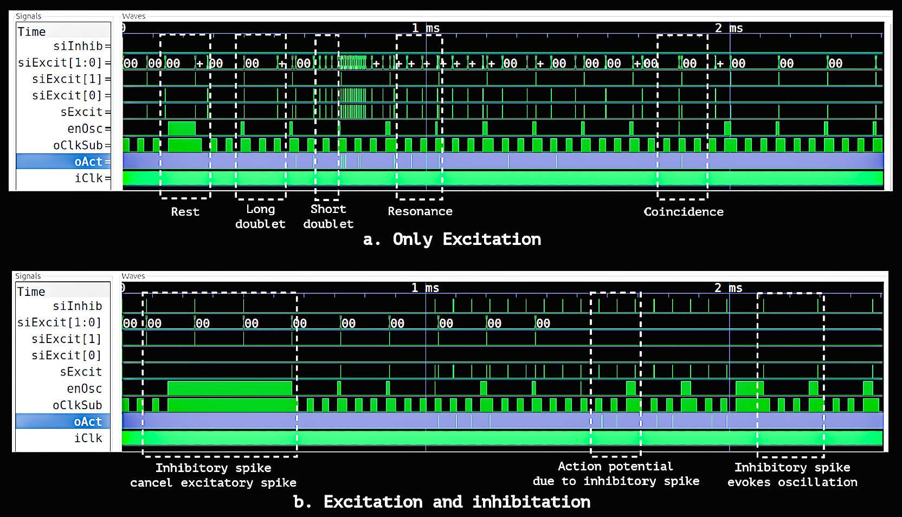
Figure 29. Simulation results for the all-digital RAF neuron.
Figure 29(a) — Excitatory spikes only. The neuron first
remains idle while the interval between successive excitatory spikes is long.
During this resting period, the NCO enable signal
(enOsc) stays high and the oscillator output
(oClkSub) remains inactive, resulting in essentially
zero dynamic switching activity. Long doublets and short but non-resonant
doublets do not produce an output spike. Around 1 ms, however, a doublet
separated by approximately 50 µs matches the neuron's oscillation period,
producing a resonance event and an output spike
(oAct). Near 2 ms, a much shorter doublet with
an interval below 20 µs triggers the coincidence detector, generating a
second output spike.
Figure 29(b) — Excitatory and inhibitory spikes. The same
experiment is repeated while inhibitory inputs are introduced. When
excitatory and inhibitory spikes arrive simultaneously before 1 ms, they
cancel each other, preventing the oscillator from being activated and keeping
the neuron in its resting state. After this cancellation period, the neuron
responds normally to valid resonance and coincidence events, demonstrating
both inhibitory suppression and the post-inhibitory behavior described by the
proposed all-digital RAF neuron.
B. Experimental Measurement
The design was verified on a DE10-nano development
kit (Cyclone V 5CSEBA6U23I7, Intel 28 nm
CMOS, 1.1 V core supply, 3.3 V TTL I/O), captured with a high-speed
multi-channel oscilloscope (Figures 30–31 in the source paper). The
captured waveforms show the neuron's subthreshold oscillation, the
output action potential, the total input spike train, and the
sample-and-hold flip-flop's output (Q0 in Fig. 25) — confirming the
coincidence detector, the resonance detector, and the damped
oscillation at rest. Thanks to the resonance effect, the neuron's
response time falls within one eigenperiod.
C. Comparison Results
Per Table 4, the proposed all-digital RAF neuron needs the
fewest resources of the compared designs. The closest
related work [99] requires counters,
comparators, adders, and subtractors; designs using the Izhikevich
model [87], [92] use more than
twenty times this architecture's flip-flop count and
additionally require multipliers and DSP blocks, which raise design
cost, chip area, and power. By Table 4's figures, this translates to
an estimated 70%–90% savings in energy and chip area.
The proposed neuron has just two configurable parameters — eigenperiod
and duty cycle — implemented here as two 8-bit buses, so an SNN of
2000 ADRAF cells needs only about
4 KB to store all neuron configurations. Because the
pulse train slows to a stop at rest, dynamic power drops to zero there
— a property ODE-based models can't share, since they continuously
recompute neuron state every system clock.
Per Table 5, compared with the analog RAF neuron of
[97] (AMI 0.35 μm CMOS), this all-digital
design (Intel 28 nm CMOS) is free from PVT variation and uses
transistors about 12 times smaller
Section VII
Conclusion
The resonate-and-fire model combines the dynamic timing behavior of a
biological neuron with the simplicity of an integrate-and-fire model, but
it has remained uncommon in hardware. This work proposes digital and
all-digital RAF block models, then realizes the all-digital version in
Verilog on an Intel Cyclone V FPGA.
The results confirm that the design reproduces the RAF model's key
properties: damped subthreshold oscillation, resonance detection,
coincidence detection, and post-inhibitory spikes, while requiring only 23
D flip-flops and no multipliers or floating-point arithmetic. :contentReference[oaicite:0]{index=0}
The implementation uses the fewest hardware resources among the compared
designs, showing that RAF-style timing behavior can be realized efficiently
in digital hardware.